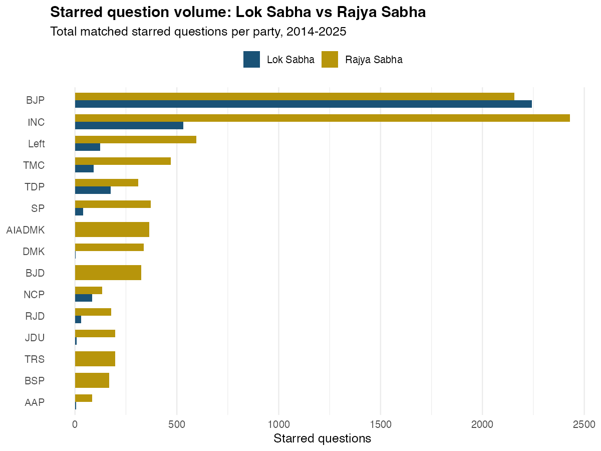
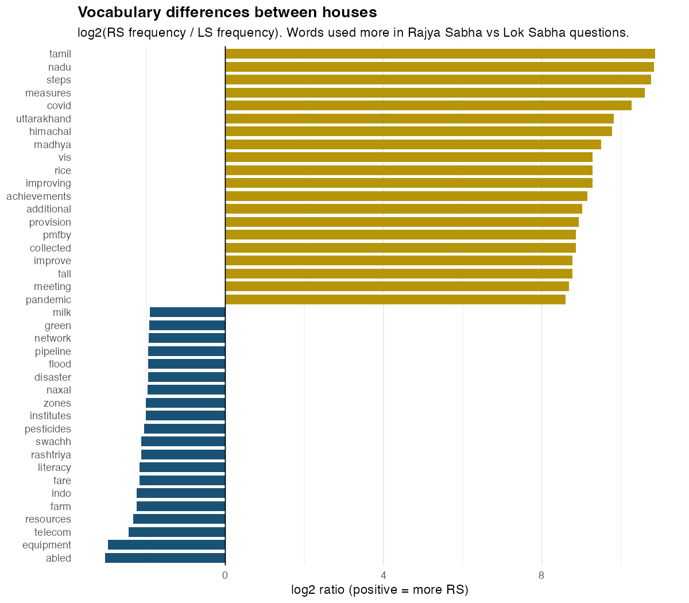
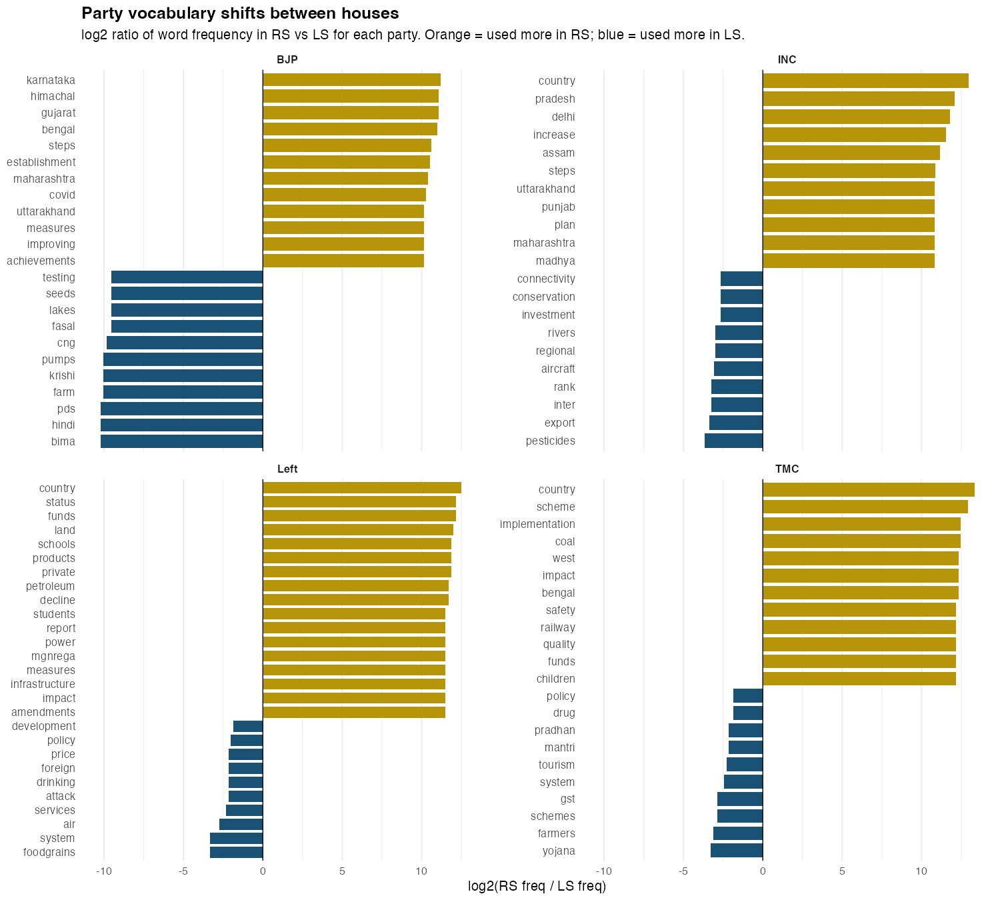
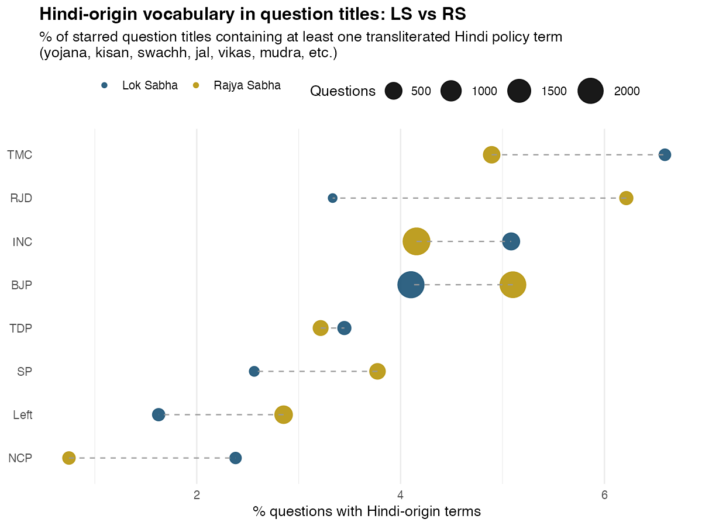
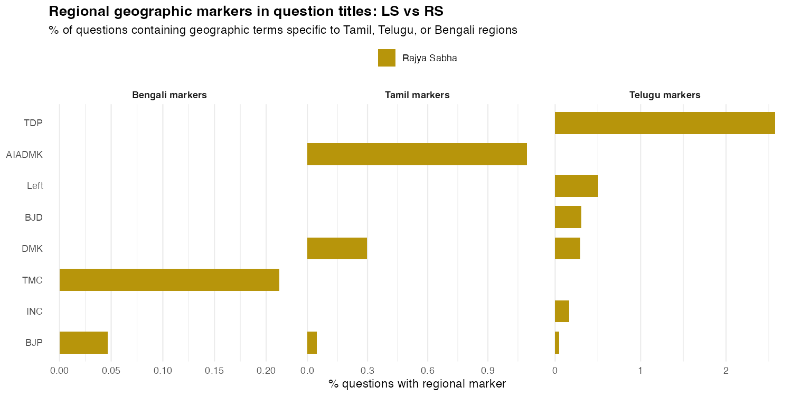
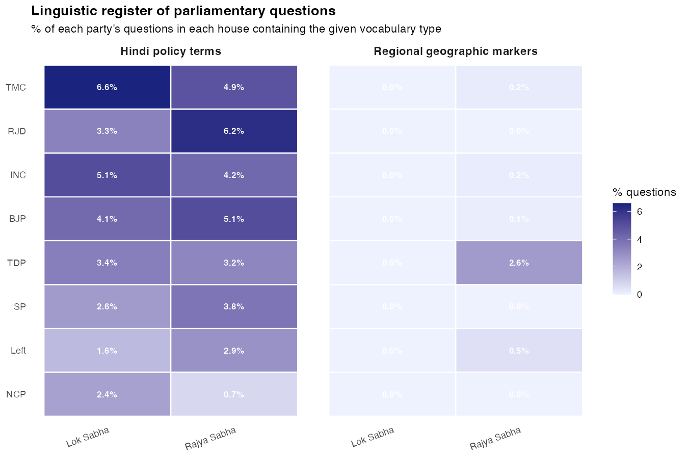
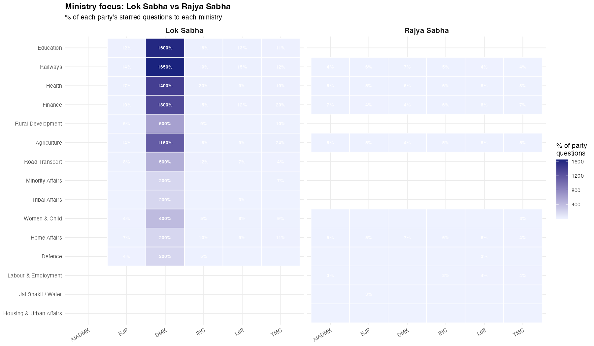
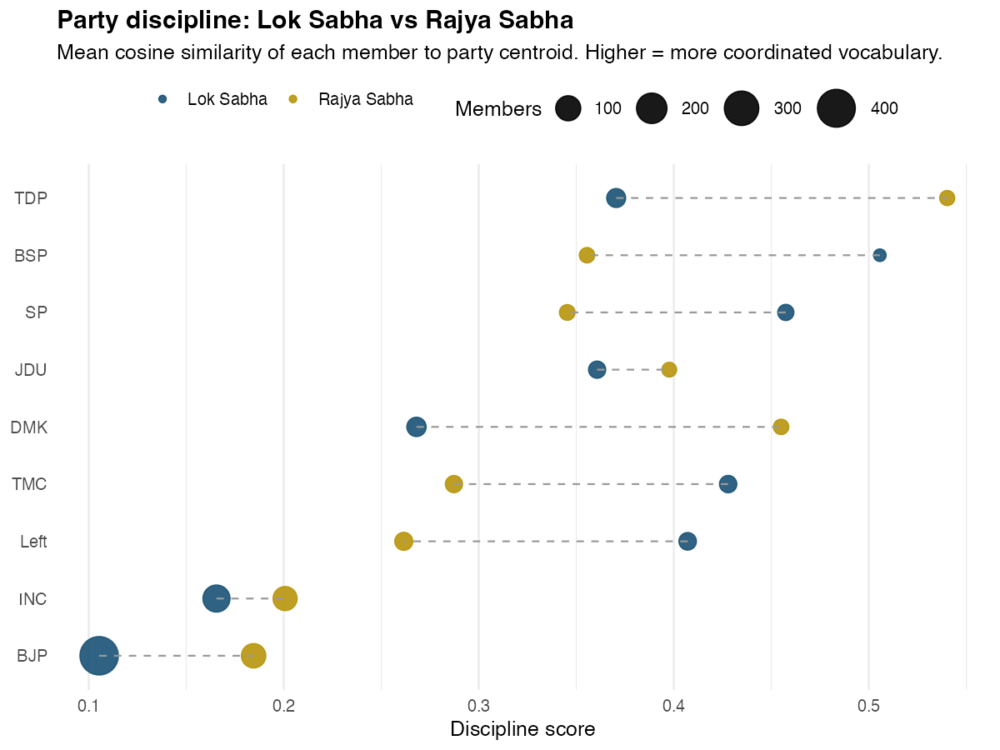
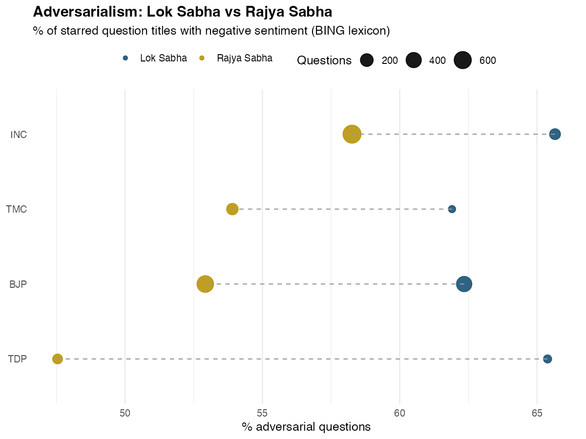
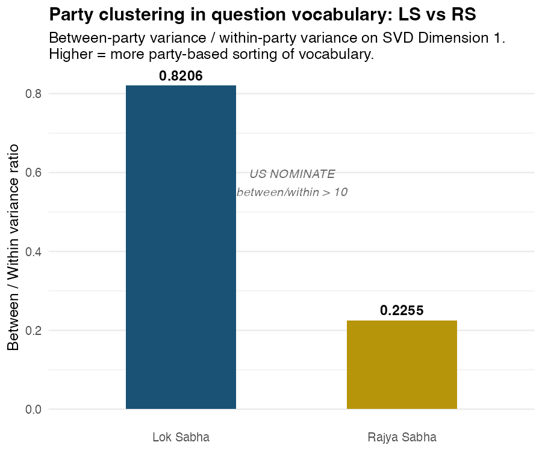

Two Houses, One Parliament: How Lok Sabha and Rajya Sabha Ask Differently
India’s Parliament has two chambers with nearly identical legislative powers but very different electoral mandates. One is elected directly from 543 constituencies. The other represents states. Running the same NLP pipeline on both produces a clean natural experiment: what happens to parliamentary language when you remove the constituency?
4,315 LS Questions
9,315 RS Questions
860 LS MPs · 264 RS Members
SVD · TF-IDF · BING Sentiment
2014 – 2026
Lok Sabha starred questions come from MPs who won individual seats. The question they ask this session reflects their constituency’s needs as much as their party’s ideology. A BJP MP from coastal Andhra will ask about fisheries. A Congress MP from Chhattisgarh will ask about forest rights. Party affiliation is one signal among several.
Rajya Sabha members are elected by state legislatures, not voters. They have no individual constituency to service. If the constituency pull is the main reason Lok Sabha parties don’t cluster by ideology in their questioning vocabulary, Rajya Sabha members should show clearer party-line vocabulary differences. That is the hypothesis this comparison tests.
Coverage and Scale
Lok Sabha generates roughly 22% more starred questions in aggregate, despite the two houses being closer in formal power than that ratio suggests. The gap reflects how the instruments function in practice: starred questions in Lok Sabha are partly constituency signalling tools, so there is structural incentive to ask more of them. RS members face no such incentive from voters.
| Lok Sabha | Rajya Sabha | |
|---|---|---|
| Starred questions (matched) | 4,315 | 9,315 |
| Members / MPs matched | 860 | 264 |
| Match rate | 95.5% | 96.7% |
| Houses / period | 16th–18th LS (2014–2026) | 2014–2025 |
| Party-vocabulary B/W ratio | 0.8206 | 0.2255 |
The Volume Question: Who Drives Each House?

The raw question count misleads. BJP held 282-303 seats across the 16th and 17th Lok Sabhas, which mechanically produces a large absolute volume. And Rajya Sabha has 245 seats to Lok Sabha’s 543, which compresses RS totals before any party-level comparison. The per-member rate strips both of those confounds.
The result is striking: across every single party, RS members ask dramatically more questions per person than their LS counterparts – roughly 5 to 10 times more. This is not a BJP-specific finding; it holds for INC, Left, TMC, SP, and every other party in the data.
The explanation is structural. Lok Sabha starred questions are distributed by lottery across a house of 543 members. When BJP holds 300 of those seats, each INC MP gets fewer draws. In Rajya Sabha, the seat distribution was more balanced throughout the Modi era – BJP typically held 35-40% of seats, not 55-56% – so opposition members had proportionally more floor access.
BJP is the only party whose RS rate (around 18 questions per member) is lower than that of most opposition parties in RS. Governing party backbenchers have limited incentive to use starred questions to hold their own government accountable. That BJP RS members ask 18 questions per member at all reflects that RS was not under BJP majority for much of this period.
DMK has a near-zero LS bar (essentially no matched LS questions) but 34 questions per RS member. DMK had very few Lok Sabha seats in the 16th and 17th parliaments – they were locked out at the national level. Rajya Sabha, filled via Tamil Nadu’s state assembly, was their only consistent national platform through those years.
JDU and AAP follow the same pattern. Their LS presence is too thin to register, but their RS members are highly active, using the upper house as a national megaphone that constituency elections had not yet granted them.
Regional parties – TDP, SP, DMK – cluster at the top in RS rates, above 30 questions per member. These are small national parties with focused issue agendas and no obligation to distribute their questions across hundreds of diverse constituencies. They concentrate their RS access intensely.
What Words Separate the Two Houses?
The simplest question: are the vocabularies of the two houses actually different? Take all question titles from both houses, compute word frequencies, and ask which words appear disproportionately in one versus the other.

Rajya Sabha distinctive words trend toward the abstract and constitutional: policy, rights, bill, national, regulation, agreement, amendment, trade. These are the words of deliberative policy debate. A Rajya Sabha member asking about trade agreements or proposed legislation is operating in the register appropriate to a chamber that reviews laws rather than delivering constituency services.
Lok Sabha distinctive words trend toward the concrete and local: pradesh, districts, state, village, construction, pending, demand, implementation. These are the words of constituency oversight. A Lok Sabha MP asking why the construction of a state highway is pending in their district is using parliament as a direct accountability instrument for local delivery.
This vocabulary split is the clearest empirical signal of the two houses operating differently. The constitutional difference (constituency vs state representation) shows up directly in the language MPs choose.
How vocabulary shifts within parties
The overall split hides interesting variation across parties. The same party’s language changes depending on which house its members are sitting in.

BJP shifts from infrastructure and scheme-specific vocabulary in Lok Sabha (where its large MP contingent asks about roads, funds, pradhan mantri schemes at the constituency level) toward more national policy vocabulary in Rajya Sabha.
INC shows a smaller shift, consistent with its opposition role in both houses. In Lok Sabha, INC MPs concentrate on accountability questions about specific government actions. In Rajya Sabha, INC language tilts toward constitutional and legislative vocabulary, where the upper house is the better venue for challenging government bills.
Left shows the most pronounced shift. In Lok Sabha, Left MPs concentrated heavily on Kerala and West Bengal constituency concerns. In Rajya Sabha, where they have no local constituency, their vocabulary converges on labour rights and national policy terms – the ideological core they fall back on when constituency pull disappears.
TMC in Lok Sabha is almost entirely West Bengal-focused. In Rajya Sabha, the constituency anchor is loosened, and TMC members broaden into national welfare and rights vocabulary.
Linguistic Register: Hindi Framing vs English vs Regional
Indian Parliament officially functions in Hindi and English, with members permitted to speak in any scheduled language. But all starred question titles in this dataset are recorded in Latin script – either English or transliterated Hindi and regional terms. The question is whether parties differ systematically in how much they rely on Hindi-origin policy vocabulary versus English framing, and whether that pattern changes between houses.
The measure is a lexicon-based count: what proportion of each party’s question titles contain at least one recognisably Hindi-origin policy term (yojana, kisan, swachh, jal, vikas, mudra, bima, krishi, gram, shakti, etc.) rather than the English equivalent (scheme, farmer, clean, water, development, loan, crop, village, empowerment).

Left parties consistently use the least Hindi-origin vocabulary in both houses (under 2% in LS, under 3% in RS). This fits Kerala’s long-standing resistance to Hindi imposition – Left MPs from Kerala and West Bengal systematically prefer English framing for policy questions, even when asking about centrally-sponsored schemes that carry Hindi names.
TMC uses the most Hindi vocabulary in Lok Sabha (6.6%) – higher than BJP. This is counterintuitive at first but makes sense: TMC LS members in constituencies across West Bengal ask heavily about central government schemes (PMAY, PMGSY, PMJDY) that BJP has branded with Hindi names. Asking about these schemes in Lok Sabha requires using BJP’s vocabulary. In Rajya Sabha (4.9%), where TMC members are more likely to debate policy design than local delivery, the Hindi framing drops.
BJP’s Hindi vocabulary increases from LS (4.1%) to RS (5.1%). In LS, BJP members are the governing party defending implementation – they often use English administrative vocabulary. In RS, where BJP faced a more adversarial floor during much of this period, members appear to lean harder into Hindi policy framing as a positioning choice.
RJD (Rashtriya Janata Dal – Hindi-belt Bihar) shows the largest RS jump: 3.3% LS to 6.2% RS. Hindi is both the natural language and the political identity marker for Bihar-based parties; the RS platform amplifies that.
TDP is consistently low in both houses (~3.5%), consistent with Andhra Pradesh’s position in the anti-Hindi imposition bloc.
Regional geographic vocabulary: RS as a platform for state advocacy
The second linguistic signal is geographic – which parties invoke place names from their home region in question titles.

The pattern here validates a straightforward claim: Rajya Sabha functions as the primary national platform for regional parties. AIADMK and DMK invoke Tamil geographic vocabulary (Cauvery, Mettur, Madurai, Tuticorin) in about 1% of their RS questions. TDP invokes Telugu geographic markers (Polavaram, Godavari, Rayalaseema) in 2.6% of RS questions – the highest rate of any regional geographic marker. TMC references Bengali geography (Sundarbans, Hooghly, Damodar) in 0.2% of RS questions.
These numbers are small as proportions, but the asymmetry is the finding: these parties do not have enough Lok Sabha seats to appear in the LS data at all during this period. Their national geographic advocacy is conducted entirely through the upper house.
Combined register overview

Ministry Targeting: Same Party, Same Ministries?
Parties have consistent strategic priorities around which ministries to scrutinise. But do those priorities survive the shift from a constituency-based house to a state-based one?

Finance is more heavily targeted in Rajya Sabha across all major parties. The upper house is the natural venue for scrutinising fiscal policy – it has no constituency-specific infrastructure spending to track, so questions gravitate toward national macroeconomic and banking policy.
Railways and Road Transport dominate Lok Sabha targeting. These are the two ministries most directly tied to constituency-level infrastructure spending. An MP asking why a road project is delayed or when a new railway station will open is doing classic constituency work that has no analog in Rajya Sabha.
Home Affairs and Labour show a more symmetric pattern: both houses scrutinise these ministries at roughly the same rate, with opposition parties concentrating there regardless of chamber. This makes sense – internal security and employment are not constituency-specific concerns; they are national policy debates.
The pattern supports a clean institutional interpretation: parties use Lok Sabha for constituency accountability, Rajya Sabha for national policy scrutiny. The party-level priorities (which party focuses on which ministry) are consistent across houses, but the type of question asked changes.
Rajya Sabha ministry excess targeting

Party Discipline: Does the Upper House Coordinate Better?
A disciplined parliamentary party’s MPs ask about the same topics using similar vocabulary. The discipline score is the average cosine similarity between each member’s TF-IDF vector and the party’s centroid. Higher = more coordinated questioning.
The constituency hypothesis predicts RS members should be more disciplined than LS MPs: without individual constituency agendas pulling them in different directions, they should converge on a shared party vocabulary.

BJP RS discipline (0.185) vs LS (0.105): RS members are 76% more disciplined. BJP sends far fewer members to Rajya Sabha than to Lok Sabha, and without the constituency heterogeneity of 68 members from very different states, the centroid is easier to converge on.
INC RS discipline (0.201) vs LS (0.166): The INC pattern mirrors BJP. Fewer RS members, more coherent opposition agenda, slightly higher discipline.
The general pattern: nearly all parties show higher discipline in Rajya Sabha, consistent with the constituency pull hypothesis. But the magnitude of the shift is modest. Discipline roughly doubles from the lowest-discipline parties, but it does not reach the level of true caucus coordination one would expect in a whipped chamber. Indian parties, in both houses, give their members substantial latitude on what to ask about.
Smaller parties (Left, DMK, BJD, JDU) score high on discipline in both houses. Their members are already highly focused on a narrow issue set regardless of chamber, so the constituency removal makes little additional difference.
Adversarialism: Which House is More Confrontational?
Opposition parties use starred questions as accountability tools. But does the nature of the chamber affect how adversarial the questioning gets? Lok Sabha MPs face re-election and may moderate aggressive questioning to maintain local relationships. Rajya Sabha members, insulated from direct voter accountability, might be freer to confront.
Sentiment is measured using the BING positive/negative lexicon applied to question titles. A question is classified as adversarial if its title contains more negative than positive words. The measure captures adversarial framing (shortage, failure, delay, violation) vs aspirational framing (promotion, welfare, development, scheme).

Left parties are the most adversarial in both houses, with 70.1% of their RS question titles scoring net-negative in BING sentiment. This is consistent across chambers: left parties adopt an adversarial stance as a matter of strategic identity.
The RS-vs-LS gap is small. Most parties show similar adversarialism rates in both houses. This suggests that the tone of parliamentary questioning is a party-level strategic choice, not a function of how insulated the member is from voters. A party that frames questions adversarially in Lok Sabha does the same in Rajya Sabha.
The exception is regional parties (DMK, AIADMK, BJD), which show somewhat higher adversarialism in RS than LS. In LS, these parties balance adversarial questions with aspirational constituency-service questions. In RS, without the aspirational constituency component, the balance tips toward confrontation.
BJP is consistently the least adversarial in both houses, which is structurally expected: government parties ask fewer critical questions about their own policies. The slight uptick in RS adversarialism for BJP may reflect RS members, with longer terms and no constituency to protect, occasionally willing to criticise implementation gaps that their LS colleagues prefer to gloss over.
The Constituency Hypothesis: Test Results
The main theoretical question: does removing constituency variation (by moving from LS to RS) produce more party-based vocabulary sorting in the ideal point space?
The test runs the identical truncated SVD pipeline on both houses. If constituency variation is the main reason Lok Sabha parties don’t cluster by ideology, Rajya Sabha parties should cluster more clearly.
Party clustering: between-party vs within-party variance

The between/within ratio for Lok Sabha is 0.8206. For Rajya Sabha it is 0.2255 – lower, not higher.
This is the opposite of what the constituency hypothesis predicts, and the reason is worth being precise about. LS is dominated by BJP, which accounts for roughly 52% of matched questions. BJP’s vocabulary as the governing party (infrastructure achievements, scheme rollouts, development targets) is systematically different from every opposition party’s vocabulary (failures, delays, accountability). That contrast inflates the between-party component in LS mechanically. In Rajya Sabha, where BJP held 35-40% of seats rather than 55%, the dominant-party effect is weaker, and the ratio falls.
Put differently: the LS B/W ratio captures a governing-vs-opposition vocabulary split as much as party ideology. The RS ratio is smaller because the house is closer to balance, and with no single party dominating, vocabulary variation spreads within rather than between parties.
In both houses, the absolute level is far below US Congress NOMINATE (>10). India’s parliamentary parties do not enforce coordinated question vocabularies. Members ask about what they know, where they are from, and what their committee positions require – not what a party whip mandates.
Ideal point maps: LS vs RS


Distribution along the primary dimension


The two distribution plots make the constituency hypothesis concrete. In Lok Sabha (left), the BJP and INC distributions are nearly identical – they cover the same vocabulary space because their MPs come from similar mixes of states and constituency types. In Rajya Sabha (right), a gap opens up. BJP members lean toward one vocabulary register, INC toward another. But the gap is far narrower than what you would expect if party ideology were the primary driver of question content.
What This Comparison Tells Us
The comparison across houses produces three conclusions.
The vocabulary split is real. LS questions are more local in language (pradesh, districts, construction, pending); RS questions are more national (policy, bill, rights, regulation). This is exactly what the constitutional difference between the houses predicts, and it shows up cleanly in the log-ratio chart. The per-member question rate is also dramatically higher in RS – 5 to 10 times higher across every party – because RS offered a more level platform when BJP held supermajorities in LS.
Party clustering does not increase in the upper house. The between/within variance ratio is higher in Lok Sabha (B/W = 0.8206) than in Rajya Sabha (0.2255). This appears to reflect the governing-vs-opposition contrast that BJP’s LS dominance creates, rather than genuine ideological polarisation. In both houses, the ratio is far below what US NOMINATE finds for Congress (>10). Party affiliation explains a small fraction of what any individual member asks about.
Party strategy is more durable than party discipline. The ministry-level comparison shows that parties maintain consistent targeting strategies across houses – INC focuses on Finance and Home Affairs in both, Left concentrates on Labour in both, regional parties track their state-specific ministries in both. But within those strategic preferences, members have enormous latitude on exact vocabulary and framing. The parties know which ministries to scrutinise; they leave their members to figure out how.
The institutional implication
India’s two-house system does not produce two distinct types of parliamentary questioning in the way the constitutional theory predicts. Both houses show weak party coordination. Both show vocabulary driven more by individual background than collective party agenda. The upper house produces more policy-oriented language and slightly more party clustering, but not a qualitatively different mode of legislative behaviour.
The Rajya Sabha is not, in practice, a deliberative chamber of states in the way the Westminster Lords or US Senate function. It is closer to a second Lok Sabha with state-based rather than constituency-based member selection – and that difference does show up in the data, but as degree rather than kind.
Methodology Note
All analyses on this page use matched starred questions from both houses (match rates: LS 95.5%, RS 96.7%). The matching pipeline, TF-IDF construction, truncated SVD, and discipline scoring are identical across houses, making the comparison clean. Sentiment uses the BING positive/negative lexicon applied to question titles, chosen for its availability and interpretability. The between/within variance ratio is computed on the primary SVD dimension; the absolute values should not be compared directly to NOMINATE, which uses a different decomposition and different legislative instrument (roll-call votes vs question vocabulary).
The analysis compares institutions, not individuals. Claims about “BJP” or “INC” behaviour are claims about the aggregate of their members’ questions, not about any specific MP’s intent.
About
Piyush Zaware